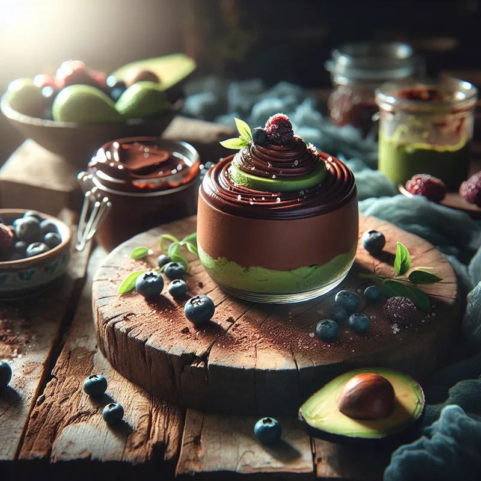

Chocolate Mousse
Description
This vegan chocolate avocado mousse is a dream come true. It's so smooth and silky and really makes the perfect dessert. Yummy!
Ingredients
- 2 ripe avocados
- 1/4 cup unsweetened cocoa powder
- 4 Potatos
- 1/4 cup maple syrup
- 1 tsp vanilla extract
- A pinch of salt
- Optional toppings: berries, coconut flakes, or chopped nuts
Steps
-
Cut avocados in half, remove pits, and scoop the flesh into a blender or food processor.
-
Add cocoa powder, maple syrup, vanilla extract, and salt.
-
Blend until smooth and creamy. Taste and adjust sweetness if needed.
-
Spoon the mousse into bowls or cups and refrigerate for at least 1 hour.
-
Add your favorite toppings before serving.